Hello, I'm
Prasad Kadu
Senior Full Stack Developer
Senior Full Stack Software Developer with ~5 years of professional experience designing and
developing scalable web applications and integrating multiple APIs.
Proficient in Java Spring Boot, Node.js, and React, with strong expertise in databases such
as PostgreSQL. Experienced in Kafka-based publisher–subscriber architectures, REST APIs, GraphQL,
and CI/CD deployment pipelines. Skilled in development and collaboration tools including
Postman, Git, and GitHub Copilot. Proven contributor to system enhancements that improve
overall functionality, performance, and user experience.
Outside of work, I enjoy trekking, badminton, biking, photography, and exploring new places,
which helps me stay curious, active, and creatively inspired.
Experience
Senior Software Engineer
Yash Technologies
- Contributed to a comprehensive cloud-based Extended Service and Warranty Management System used by enterprise representatives and dealers across North America.
- Played a key role in developing 10+ features using React (frontend) and Java Spring Boot (backend microservices), with PostgreSQL as the database.
- Developed a quotation PDF generation feature, enabling dealers to instantly generate and download formatted service quotations for customers.
- Built a Help & Support module allowing users to raise support tickets and attach relevant documents, improving resolution workflows.
- Implemented a feature flagging / feature toggle system to control the rollout of new features across different user segments without redeployment.
- Designed and developed custom reusable React components and handled client-side routing, improving code maintainability and navigation experience across the application.
- Mentored junior developers, conducted code reviews, debugging, and troubleshooting
- Leveraged AI tools like GitHub Copilot and ChatGPT to boost productivity and accelerate development cycles.
Software Development Engineer
BridgeNext Technologies
- Worked on a comprehensive cloud-based Transportation Management System (TMS) used across the US, Canada, and Mexico.
- Played a key role in developing 15+ features for the TMS platform using React (frontend), Node.js (Nest.js Framework), and Java Spring Boot (backend microservices), with PostgreSQL as the database.
- Enhanced order tracking by implementing an auditing feature with Kafka messaging queues, Java Spring Boot, and GraphQL, improving transparency and reducing external API calls by 20%.
- Collaborated with stakeholders for requirement gathering, technical analysis, and user story mapping, ensuring well-defined development roadmaps.
- Optimized search performance by refining SQL queries, improving data retrieval speed for scheduled orders by 30%.
- Mentored junior developers, conducted code reviews, debugging, and troubleshooting, while gaining experience in CI/CD pipelines using GitHub Actions.
- Leveraged AI tools like GitHub Copilot and ChatGPT to boost productivity and accelerate development cycles.
Education
Birla Institute of Technology and Science, Pilani
Master of Technology — MTech WILP, Artificial Intelligence & Machine Learning
Savitribai Phule Pune University
Bachelor of Computer Science Engineering | CGPA: 8.75

Abasaheb Garware High School
HSC | Percentage: 80.15%

MIT School, Pune
SSC | Percentage: 92.2%
Projects
Enterprise Projects
Extended Services & Warranty Management Platform
- Contributed to an enterprise-scale admin tool enabling internal teams to create, configure, and publish extended service packages for heavy equipment and vehicles across multiple product divisions.
- Developed a dealer-facing web application allowing authorized dealers to browse available service packages, generate customer quotations, and create purchase contracts.
- Built backend microservices using Java Spring Boot along with Python FastAPI and OpenSearch for fast and scalable search functionality.
- Developed the frontend using React.js with Redux for state management across both the admin and dealer-facing applications.
Order Auditing: Real-Time Order History & Tracking
- Implemented an audit tab to maintain a comprehensive history of order actions, including stop additions/removals and order updates.
- Developed backend functionality using Java Spring Boot with PostgreSQL, handling around 1 million records.
- Integrated Kafka consumers to listen to 15+ event topics for real-time tracking and logging.
- Optimized performance with Redis caching, reducing database calls and improving efficiency.
Key Features:
- Real-time audit trail: Leveraged Kafka consumers to track and display order actions in real-time.
- Comprehensive order lifecycle tracking: Maintained a complete history of order modifications.
Order Scheduling
- Developed a scheduling order page with a search filter and dynamic table displaying relevant order details.
- Built the backend using Node.js (Nest.js framework) to handle SQL queries and GraphQL responses.
- Designed the frontend with React.js for an intuitive and seamless user experience.
- Optimized database queries and indexing, improving query performance and response time.
Key Features:
- Default filters: Implemented predefined filters for streamlined search.
- Optimized query performance: Enhanced speed with optimized SQL queries and indexes.
- Multiselect chip filters: Enabled users to filter search results efficiently.
College Projects
Brain Tumor Detection using CNNs
Django · Convolutional Neural Networks · VGG 16
Created a web application where user can upload an image and the application will generate a report, whether the uploaded image is tumorous or not. User can also send diagnosed report as email to respective user/doctor. Also user can see the location of nearest hospital using this application using opensource javascript map api.
Real Time Face Recognition Software
Python · Tkinter · OpenCV
Developed software could recognize faces detected by the webcam of a laptop. Used Open CV algorithm which tried to match the facial features with the data set images. The software could also count the number of faces in an image along with their names.
Technical Skills
Technologies
Languages
Databases
Messaging
Testing
Deployment
Dev Tools
Other
Interests & Achievements
Beyond the code, I explore forts, ride long distances, play badminton, geek out over Harry Potter, and share tech knowledge online.
Trekking & Biking
Hiked over 35+ forts across Maharashtra — from Pune to Kokan. My bike has taken me on numerous adventurous rides, with the longest one being the Kokan coastal belt ride of 400+ km. I also actively contribute to Google Maps with 200+ reviews and contributions.
Forts Explored
35+
Longest Ride
400+ km
Google Maps
200+ Reviews
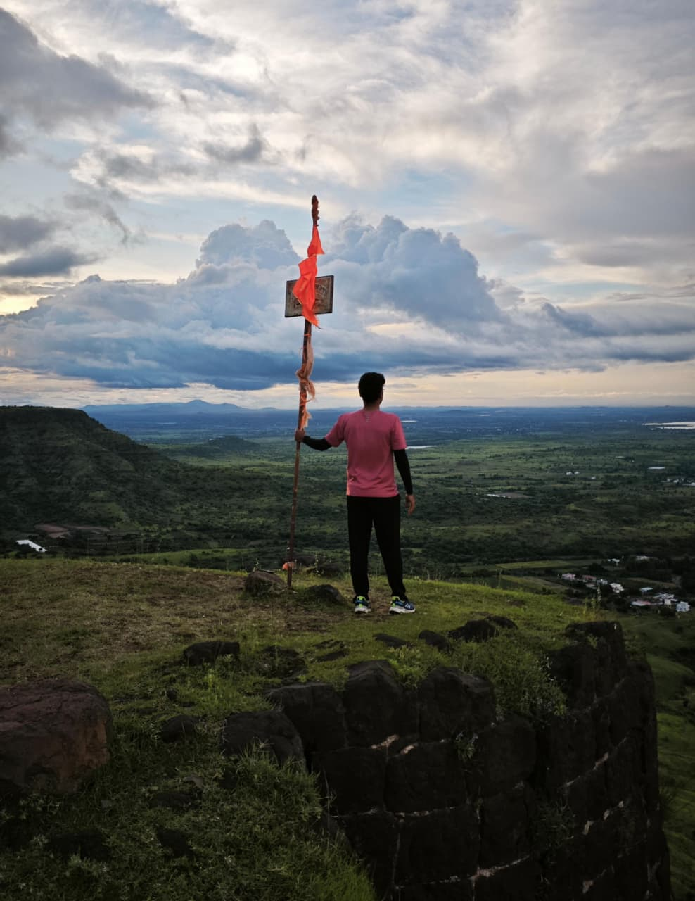
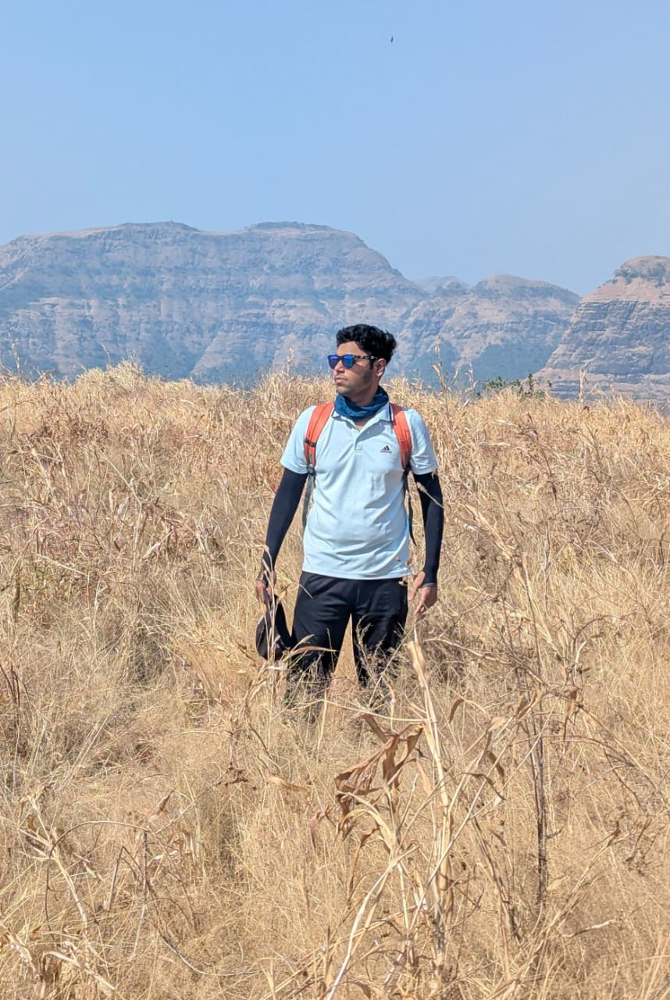
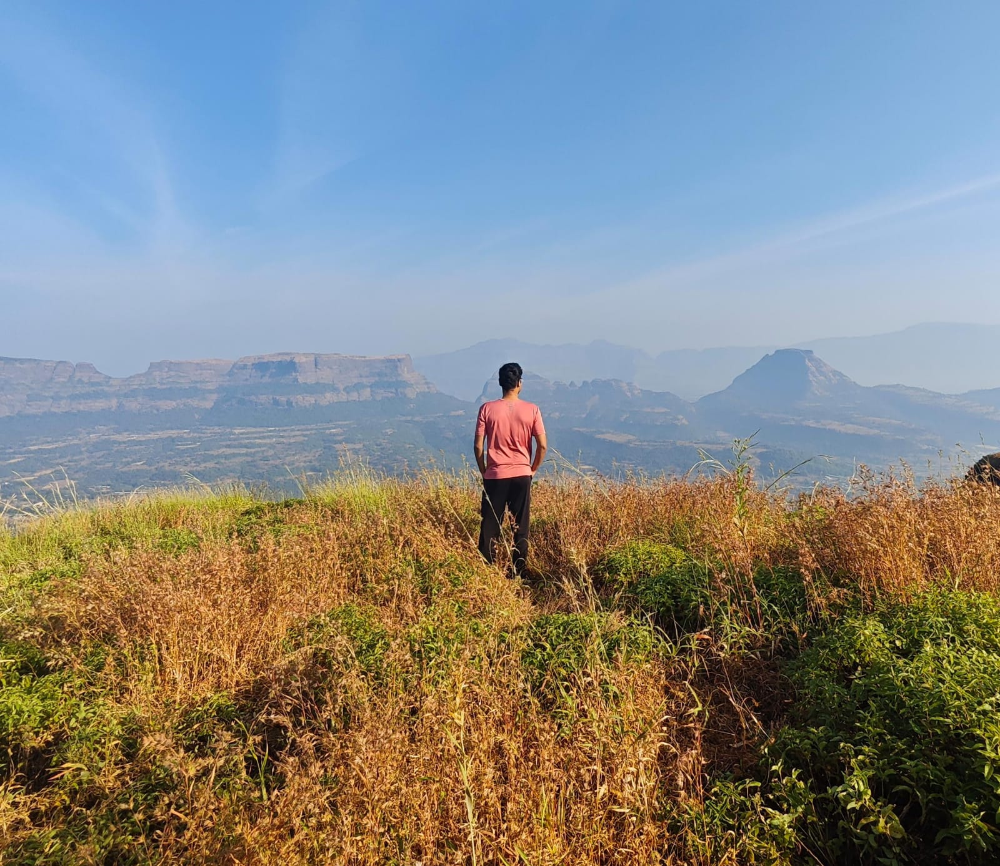
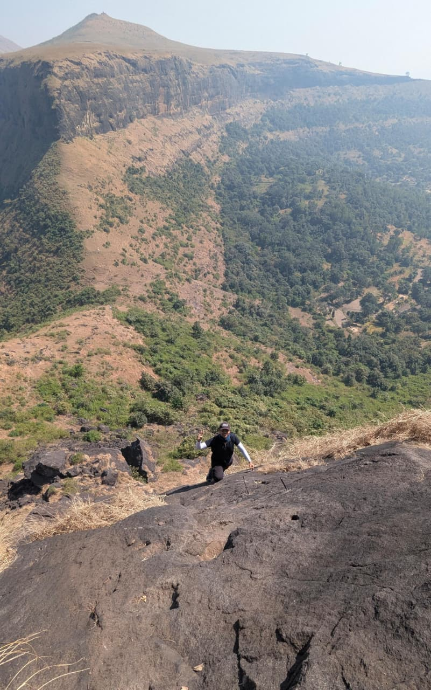
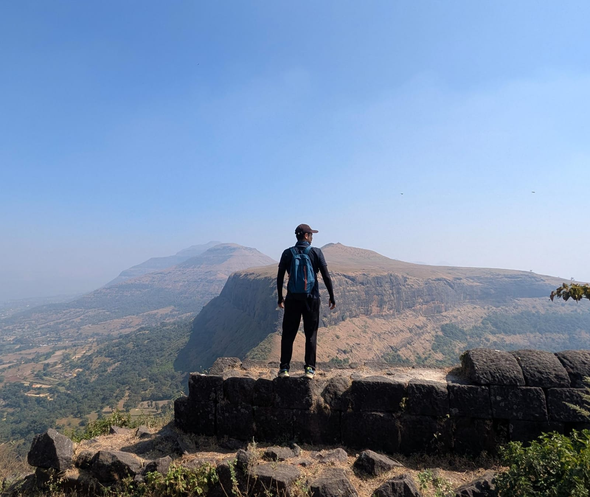
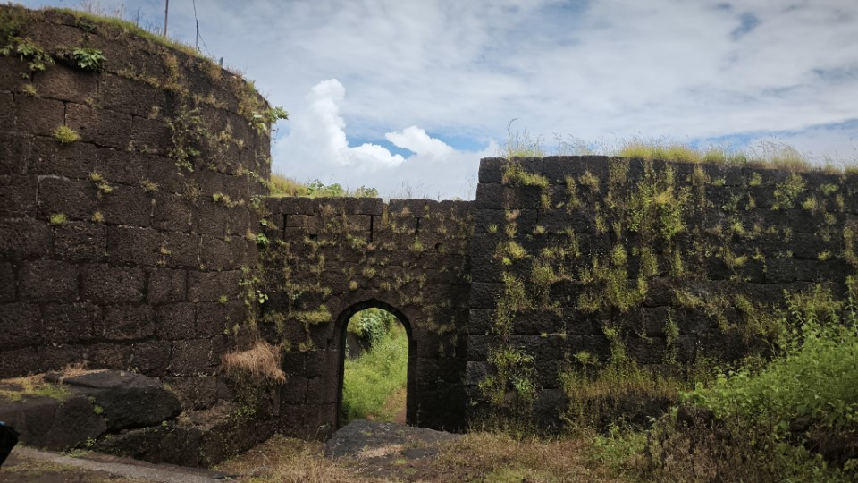
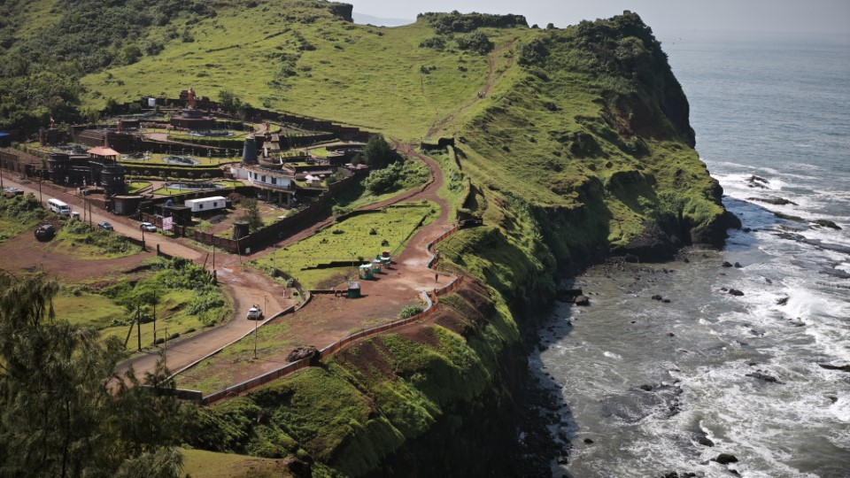
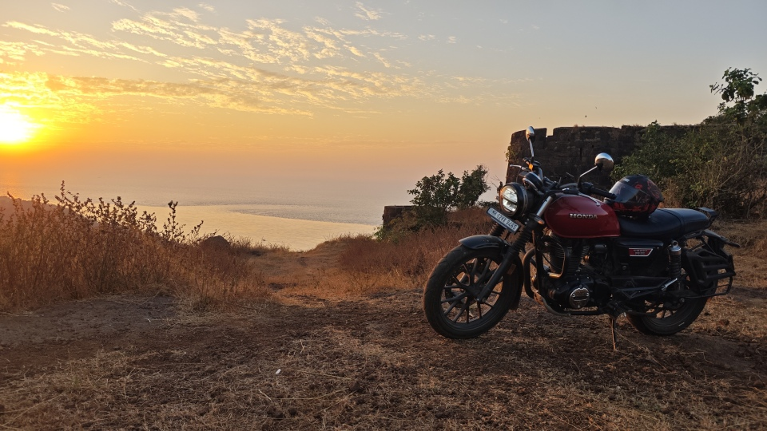
Photography
Capturing moments through the lens is something I truly enjoy. From the rugged forts of Maharashtra to serene lakes and wildflowers along the trail, every trek gives me a chance to frame nature's beauty. Here are some of my favourite shots. I have a collection of photos of 100+ unique wild flowers.
Technologies & YouTube

I love reading technology blogs and staying updated with new advancements in AI and New AI tools. I also run a YouTube channel where I share tech tutorials and deep-dives into the tools and concepts I work with every day and which might help other developers or students to understand complex patterns easily.
One of my videos has crossed 96,000+ views — covering a topic that resonates with developers worldwide.
@prasadkadu9737
Tech tutorials · Deep-dives · Developer tips
Harry Potter
I am a massive Harry Potter fan, the wizarding world has always captured my imagination since childhood. The intricate lore, the spells, the friendships.
There's something deeply satisfying about how magic in the Harry Potter universe has rules, limitations, and elegance.
Badminton
I picked up badminton at the age of 13, and since then, I have never put down the racket. Played mainly on weekends as time allows, it has become a hobby that helps me unwind and recharge. In 2025, I was honoured to win the Men's Singles title at the Yash Badminton Open 2025, organized by my organization in Pune.
Tournament Win
Yash Badminton Open 2025
Category
Men's Singles
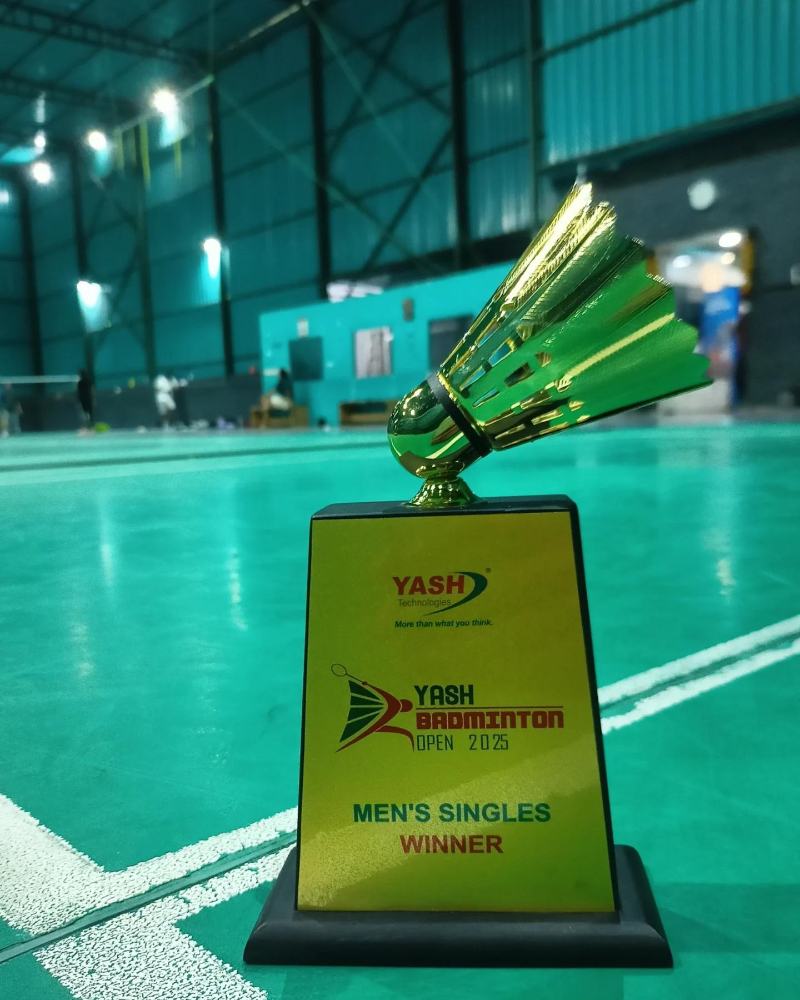
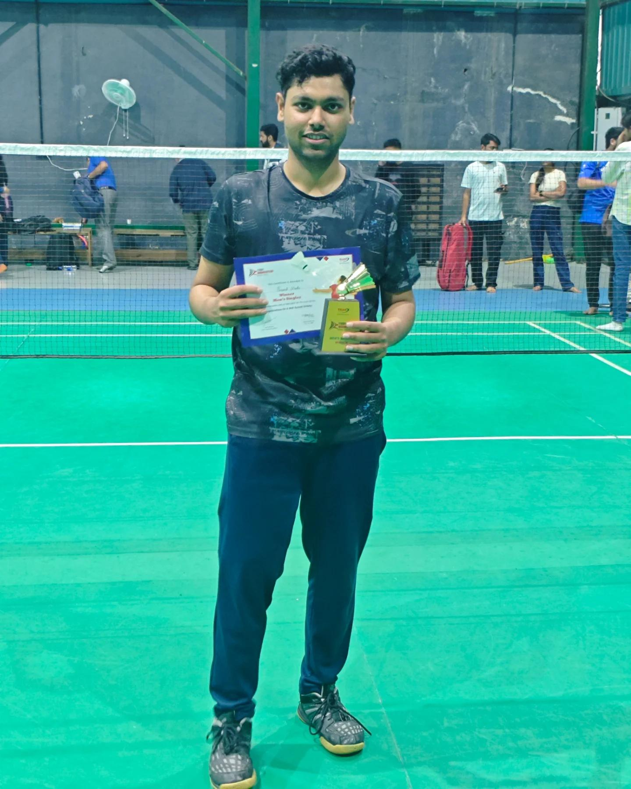
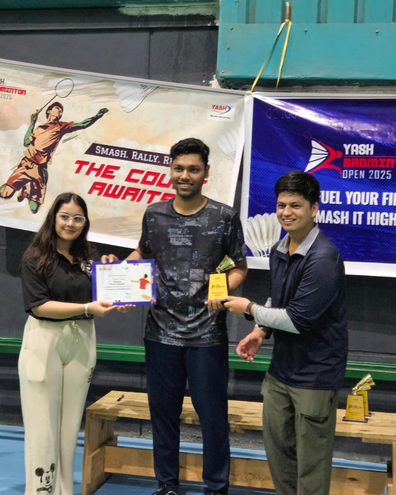